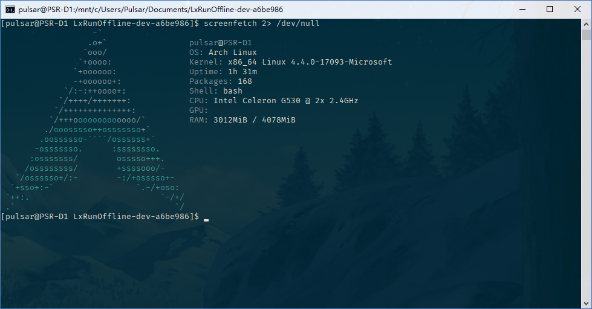

前段时间重装系统之后我就一直在 WSL 内开发。Ubuntu 因为我不喜欢所以直接放弃（？？？），所以就一直在用 openSUSE。然而现在越用越感觉 zypper 的下载源坑爹……于是在 Github 上一阵搜索之后，我终于找到了这个神器：LxRunOffline。于是我毅然卸载了 openSUSE，开始尝试安装 Arch Linux……
2018-07-25 修改，原文见 Github
¶准备工作
- 本文假设你已经有一些 Arch Linux 使用经验；
- 你需要一个 64 位的 Windows 10 1803 版本系统；
- 启用适用于 Linux 的 Windows 子系统功能；（不开这个还想用 WSL？）
- 下载 LxRunOffline，解压到任意位置；
- 在 清华大学镜像站 下载
archlinux-bootstrap-<日期>-x86_64.tar.gz。
¶安装 rootfs
在 LxRunOffline 目录下打开 CMD 或 PowerShell，输入
|
|
LxRunOffline 可能会要求重启，那么重启之后再次输入上述命令。LxRunOffline 会把系统安装到指定的目录。正常安装完成后 LxRunOffline 不会有任何输出（真是遵循 UNIX 哲学）。然后输入：
|
|
把刚刚安装的 Arch 设为默认，就可以输入 wsl 启动 Arch 了。
¶安装系统
首先删除 /etc/resolv.conf，退出 WSL 再重新进入使 Windows 自动生成这个文件。然后 cat /etc/pacman.d/mirrorlist 选择一个镜像服务器，echo 'Server = <你选择的镜像服务器> >> /etc/pacman.d/mirrorlist'。（因为这时 Arch Linux 内还没有安装任何编辑器。）
然后安装基础软件：
|
|
执行第三个命令时，Pacman 会询问需要安装哪些包，此时应选择不安装 base 组内的 linux 包和 base-devel 组内的 fakeroot 包。前者是因为 WSL 中 Linux 内核由 Windows 提供，所以不需要安装；后者的原因见此。
这里建议
|
|
然后再用 vi 或者 nano 重新编辑 /etc/pacman.d/mirrorlist。
然后设置语言和时间：使用 vi 或 nano 编辑 /etc/locale.gen，取消注释需要使用的语言（一般是 en_US.UTF-8 UTF-8 和 zh_CN.UTF-8 UTF-8），输入 locale-gen 生成语言文件。输入 ln -sf /usr/share/zoneinfo/<区域>/<子区域> /etc/localtime 来设置时区，如我的是：
|
|
接下来设置用户：
|
|
输入 visudo，按需要设置 sudo 权限。按 这里 的说明添加 archlinuxcn 软件源，安装 fakeroot-tcp 包。
接下来输入 id -u <用户名> 查看 UID，然后退出 Bash，输入
|
|
设置默认用户。此时建议打开任务管理器检查是否有未关闭的 WSL 进程。把 WSL 进程全部停止，然后打开 Bash，系统就会默认以你的用户登录了。

到这里为止，Arch Linux 就安装完成了。（撒花🎉~）此时系统内还有一些无用的用于安装系统的软件，强迫症可以输入以下命令卸载它们：
|
|